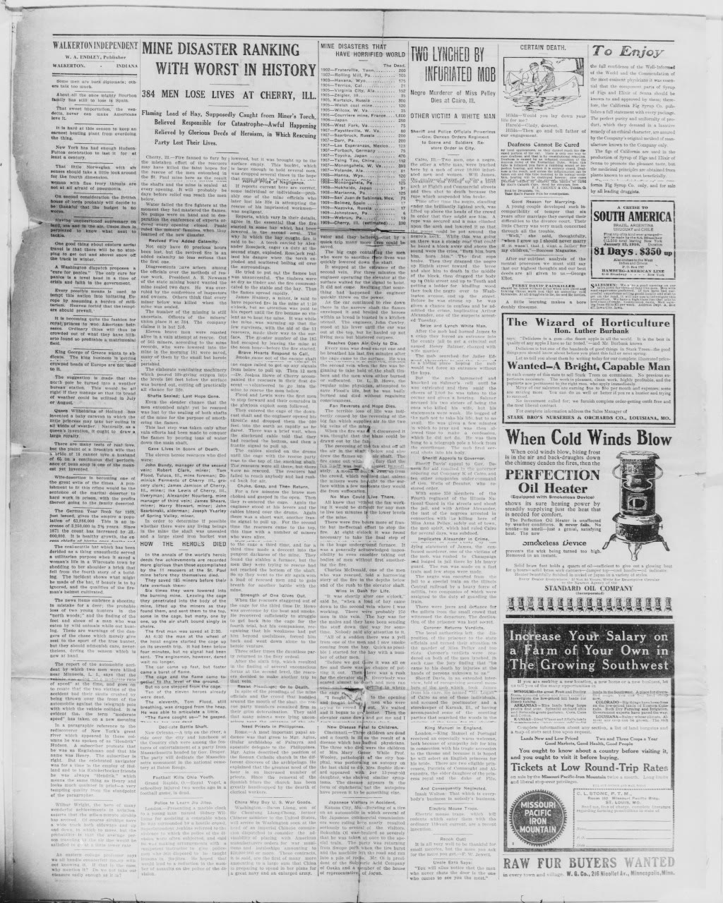

HN-368: Cherry mine rescue reports fear 384 dead; later tally lower
HN-368 · November 17, 1909 · Disasters, Accidents & Emergencies > Rescues, Evacuations & Emergency Response > Search and rescue

page image (archive tiles)Recorded finding
Discovery narrative
Source: Jasper County Democrat, p. 2 — original page; fuller contemporary rescue feature; NIOSH century-of-mining-research history.
Report: A fire in the St. Paul coal mine at Cherry, Illinois, spread after a load of hay or combustible material caught fire underground. The newspaper described sealing shafts, blocked rescue attempts, and uncertainty over how many trapped men remained alive; another paper warned 384 had been lost.
Assessment: NIOSH identifies 259 miners and rescuers killed in the November 13 disaster. The paper's dramatic counts reflected confusion about men trapped, men rescued, and rescuers killed. It is important to preserve the rescue chronology and not copy 384 as the final fatality figure.
Original archive images (2)
Authentic images retrieved from Hoosier State Chronicles (Indiana State Library). Article crops are located using the archive's own OCR word coordinates and rendered at native crop resolution; article clips are assembled from the archive's own article-block images; page images marked "archive tiles" are stitched from the archive's own tiled page service at its 256-px tile cap; page images marked "issue PDF" are single pages rasterised from the archive's own issue PDF, with the page chosen by matching the headline against the PDF's text layer; page scans are reduced-size access renditions. No images were generated, mocked, or retouched.

Hoosier State Chronicles (Indiana State Library)
Open full-resolution clip · Archive viewer (full resolution)

Hoosier State Chronicles (Indiana State Library)
Open larger view · Archive viewer (full resolution)
Source acquisition
Status: Archive images acquired
Authentic archive-owned image renditions were retrieved for this record and are displayed above. The source-acquisition manifest preserves the original pre-acquisition feasibility assessment.
Original seed
URL (preserved verbatim): https://newspapers.library.in.gov/?a=d&d=JCDC19091117.2.10
Saved research report: Historical_Newspaper_Event_Research_353-377_2026-10-23.md
Evidence note: A newspaper report means a historical publication made a claim; it does not establish that claim as fact. Contemporary reporting is separated from later scholarly context and our own assessment.